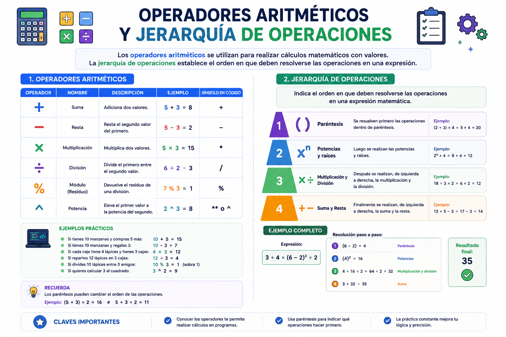

Si introduces en una calculadora científica o línea de código la operación `2 + 3 * 5`, un sistema bien configurado te devolverá `17` (porque multiplica antes de sumar), mientras que una persona sin bases matemáticas podría pensar que da `25`. En programación, omitir la prioridad y jerarquía estricta de los operadores matemáticos al calcular saldos financieros o trayectorias de cohetes espaciales puede provocar pérdidas de millones de dólares o fallas catastróficas del sistema.
⚠️ Debes visualizar el video completo sin adelantar para desbloquear la evaluación.
Material audiovisual adaptado con fines estrictamente educativos. Créditos del autor: INFORMATICONFIG.

La correcta evaluación de expresiones aritméticas en ciencias de la computación sigue reglas matemáticas estandarizadas llamadas jerarquía o precedencia de operadores, la cual determina el orden de cómputo interno.
¿Por qué el cálculo `2 + 3 * 5` da como resultado exacto `17`?
¿Qué elemento tiene el poder absoluto de romper la jerarquía estándar y forzar al sistema a evaluar primero una suma?
¿Qué calcula exactamente el operador aritmético especial "Módulo (%)" en programación?
¿Cuál es el resultado matemático de la expresión `10 % 3`?
Siguiendo la jerarquía explicada, ¿cuál es el orden correcto de evaluación de mayor a menor importancia?
¿Qué regla aplica la CPU si se encuentra con la expresión `12 / 2 * 3` donde la división y la multiplicación tienen la misma jerarquía?
¿Cuál es el valor final al evaluar la expresión de la pregunta anterior `12 / 2 * 3` siguiendo la asociatividad?
Si queremos que se sume `5 + 5` y el resultado se multiplique por `2`, ¿cómo se debe estructurar la expresión?
¿Qué pasaría en una aplicación bancaria si un desarrollador olvida colocar los paréntesis adecuados al calcular los intereses anuales?
¿Cuál es el resultado final de evaluar la expresión `20 - 4 * 2 + (6 / 2)`?